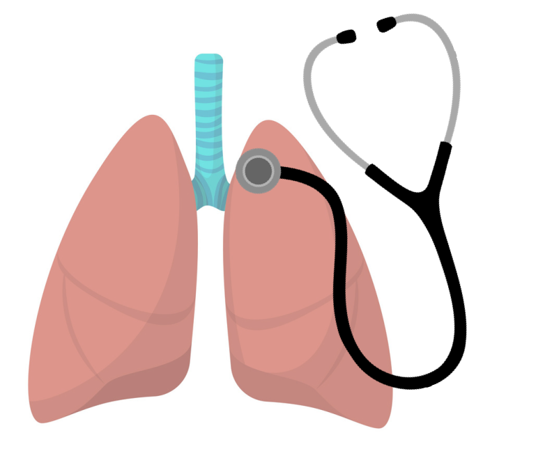

{% extends "layout.html" %}
{% block content %}
<h1>Welcome to Doctor Lung</h1>
{% for snap in snapshots %}
<div></div>>
{% endfor %}
</body>
<br>
<h2>A tool to monitor the abnormal respiratory sounds at home</h2>
<h5>Respiratory sounds are important indicators of respiratory health and respiratory disorders. This web application provides you a convinient tool to monitor the abnormal respiratory sounds such as crackles and wheezes. Please refer to the Demo page to see the mel spectrom of different type of sounds.
</h5>
<div></div>

<br>
<h3>Required recording equipments</h3>
<p style="text-indent: 40px">Phone</p> 
<p style="text-indent: 40px">microphone:</p>
<p style="text-indent: 80px">a. AKG C417L Microphone (AKGC417L), </p>
<p style="text-indent: 80px">b. 3M Littmann Classic II SE Stethoscope (LittC2SE), </p>
<p style="text-indent: 80px">c. 3M Litmmann 3200 Electronic Stethoscope (Litt3200), </p>
<p style="text-indent: 80px">d.  WelchAllyn Meditron Master Elite Electronic Stethoscope (Meditron)</p>
</h5>

{% endblock content %}